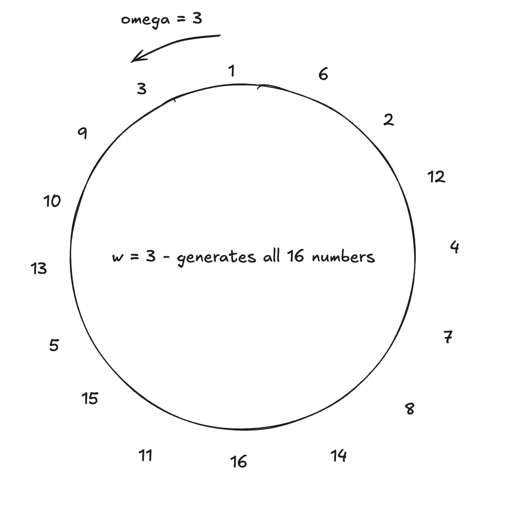
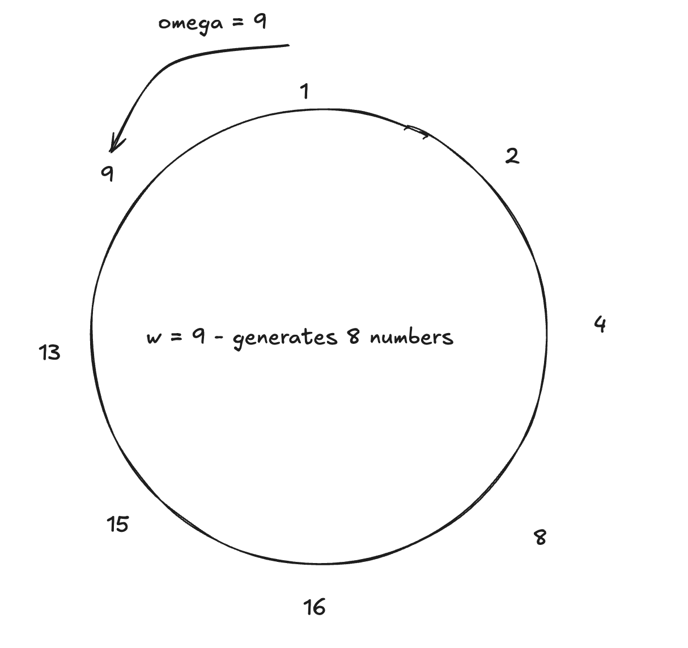
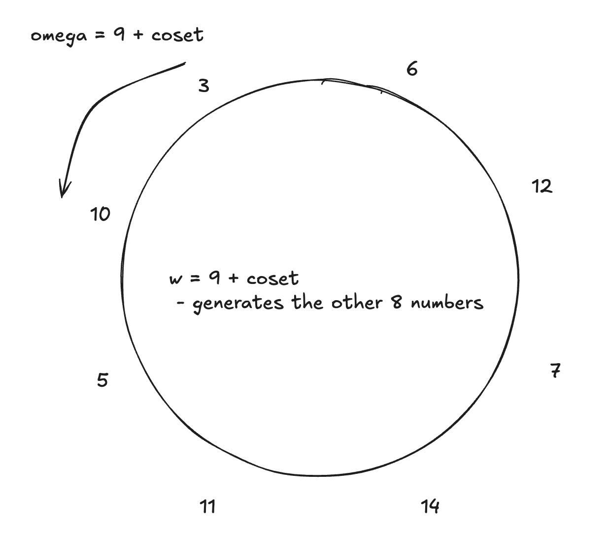

Fields and Basic Concepts
Boojum works on the Mersenne31 field — the natural numbers modulo the prime , where .
Using this field means:
- To represent larger numbers (like u32), you need to use two separate elements.
- For safety, most entries in the field are assumed to be smaller than u16.
- For operations requiring more bits, we use
Mersenne31Complex(holding 2 elements) andMersenne31Quartic(holding 4 elements).
Multiplicative Groups in Fields — Omega
In our documentation and code, you'll often see the symbol ω (omega). Here's a quick explanation.
Consider a smaller field, such as modulo 17. If we pick the number 3 and multiply it by itself:
3^1 = 3
3^2 = 9
...
3^16 = 1
3^17 = 3
Here, 3 is a generator of a multiplicative group of size 16 (which contains every element of the field except 0 — though this isn't always the case).
Some interesting points:
- If 3 generates a group of size 16, then generates a group of size 8.
- Additionally, generates a group of size 4:
13^1 = 13 13^2 = 16 13^3 = 4 13^4 = 1 - Note that multiple groups of size 4 exist. For example, multiplying the generator by the original generator 3 creates a new coset:
3 * 13^1 = 5 3 * 13^2 = 14 3 * 13^3 = 12 3 * 13^4 = 3
These are called "cosets" and are used in our code for Low Degree Extensions.
Visual examples are provided in the images below:



Why Mersenne Field?
Previously, we used the Goldilocks field (), known for its large multiplicative group with high 2-adicity (allowing the group size to be divisible by a large power of 2).
However, the Mersenne field's multiplicative group only has a 2-adicity of 1. To overcome this limitation, most operations are performed on the MersenneComplex struct — an extension field (similar to complex numbers) with a multiplicative group size of .
For example, here is the generator for this group:
#![allow(unused)] fn main() { pub const TWO_ADIC_GENERATOR: Self = Self { c0: Mersenne31Field::new(311014874), c1: Mersenne31Field::new(1584694829), }; }
Why Multiplicative Groups?
Using multiplicative groups instead of direct field elements has its benefits, especially when computing "vanishing polynomials." For instance, consider the polynomial:
Expanding this would normally yield a polynomial with many coefficients. However, when using group generators, many terms cancel out.
For a simple example, when 16 is the generator of a group of size 2 in modulo 17:
16^1 = 16
16^2 = 1
Then,
Notice how most coefficients vanish, resulting in a cleaner polynomial. Similarly, with 3 as a generator for a group of size 16:
This is the key benefit: using powers of ω as positions for the values a allows us to compute large polynomials quickly. This efficiency is crucial during proof verification.
Why 2-adicity?
In FRI (Fast Reed-Solomon Interactive Oracle Proofs of Proximity), the polynomial is "folded," which reduces its degree by half. Because the sizes involved are powers of two, this process can be repeated many times, eventually resulting in a low-degree polynomial.